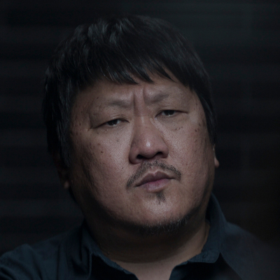

Clarence Shi (Da Shi)
Protege Saul e oferece a ele e a Jin uma imagem da persistência humana por meio dos insetos.
Conteúdo até a temporada 1, episódio 8.
Ver Mapa de Conexões →Temporada 1
Acompanhe os acontecimentos registrados até o episódio escolhido.
Episódio 01 — Countdown
Investigador encarregado de seguir os casos envolvendo cientistas. Trabalha para Thomas Wade.
Episódio 03 — Destroyer of Worlds
Jack rejeita o recrutamento. Tatiana o mata em sua casa; os recursos de vigilância ao redor não conseguem impedir nem esclarecer o ataque.
Episódio 04 — Our Lord
Depois da morte de Jack, Wade e Shi propõem que Jin ajude a identificar a rede que a recrutou. Ela participa de um encontro da organização.
Episódio 05 — Judgment Day
Ye é interrogada sobre o contato e a organização. Sua posição mostra que os antigos aliados humanos podem ter deixado de ser necessários aos San-Ti.
Episódio 08 — Wallfacer
Protege Saul e oferece a ele e a Jin uma imagem da persistência humana por meio dos insetos.
Personagens relacionados
- Thomas WadeInvestigação sob comando
- Jin ChengInfiltração e investigação
- Saul DurandProteção contra atentados